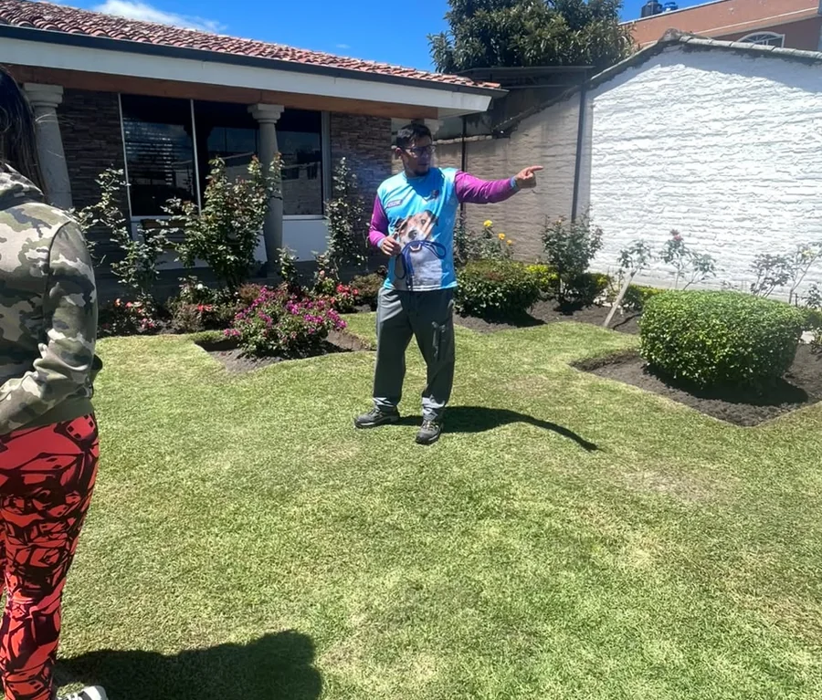
Clases personalizadas a domicilio
Entrenamiento adaptado a tu perro y a las situaciones reales de tu hogar.
¡Agendar mi clase ya!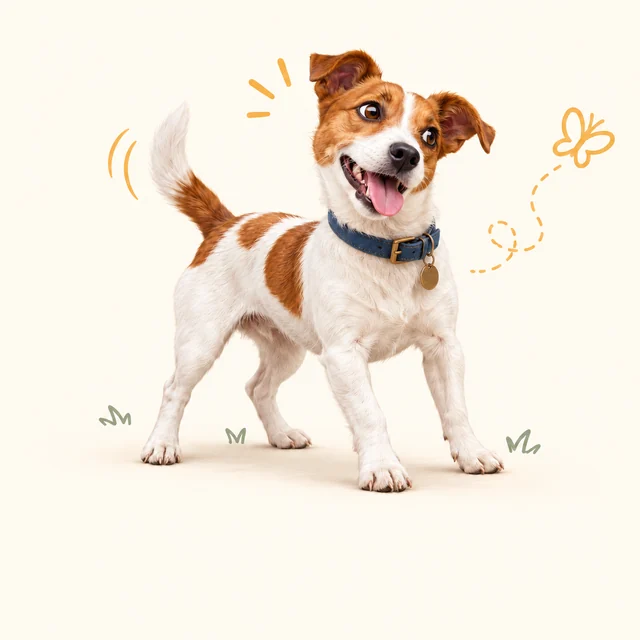
No me hace caso
¿Le hablas y parece que no te escucha? Das la orden, la repites, y aun así hace lo que quiere, como si no existieran reglas en casa. Te enseñamos a comunicarte de forma clara para que tu perro te preste atención y responda.
Quiero ayuda con esto →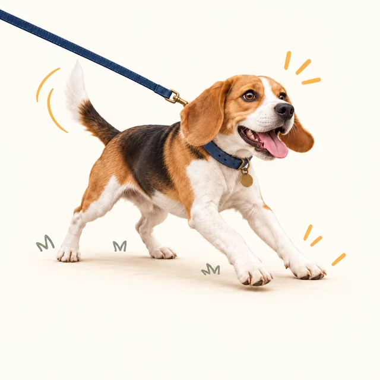
Tira de la correa
¿Sacas a pasear a tu perro y es él quien te pasea a ti? Jalones, brazos adoloridos y paseos que ya no disfrutas. Trabajamos contigo para que caminar juntos sea tranquilo y agradable.
Quiero ayuda con esto →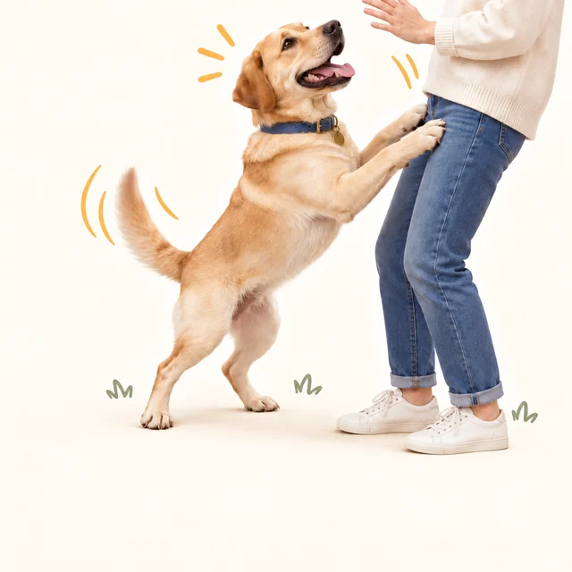
Salta sobre las personas
¿Cada vez que llega una visita tu perro salta, empuja y no se calma? Te ayudamos a enseñarle a saludar con tranquilidad, sin saltar sobre ti ni sobre los demás.
Quiero ayuda con esto →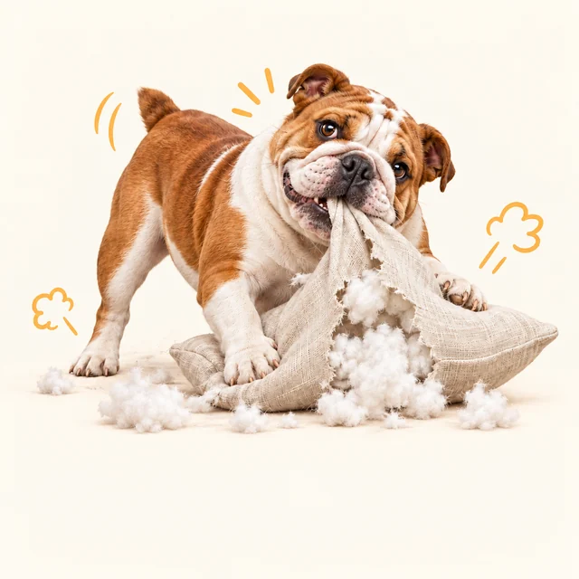
Destruye cosas en casa
¿Llegas y encuentras zapatos, muebles o cojines mordidos? Tu perro necesita aprender qué puede morder y cuáles son sus límites. Te enseñamos cómo lograrlo en el día a día.
Quiero ayuda con esto →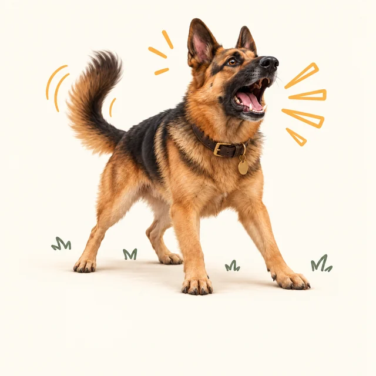
Ladra demasiado
¿Ladra ante cada ruido, cada timbre o cada persona que pasa? Entender por qué ladra es el primer paso: te guiamos para que aprenda a calmarse y a escucharte.
Quiero ayuda con esto →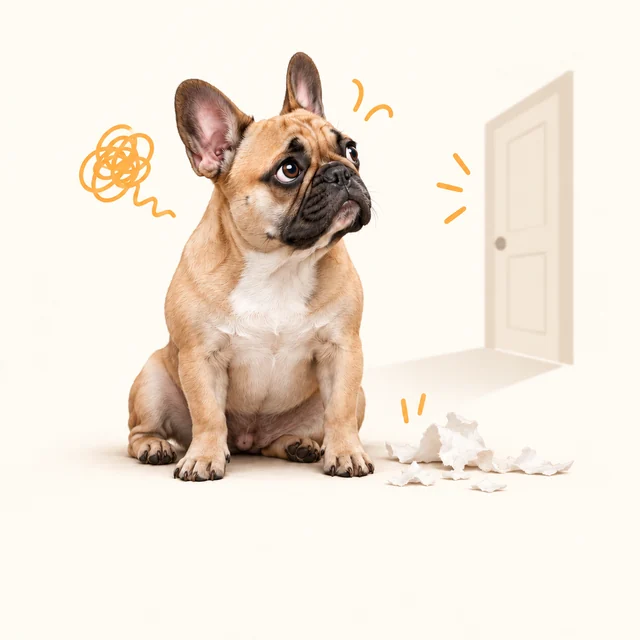
Se queda solo (ansiedad)
¿Se angustia, llora, ladra o rompe cosas cuando te vas? Aprender a quedarse solo se puede trabajar poco a poco. Te acompañamos para que tú y tu perro estén más tranquilos.
Quiero ayuda con esto →Crianza de cachorros
¿Acaba de llegar un cachorro a tu casa? Pipí por todos lados, mordidas y mucha energía. Desde el inicio te orientamos para construir buenos hábitos y una convivencia feliz.
Quiero ayuda con esto →Te enseñamos a mejorar la convivencia con tu peludit@

Entrenamiento adaptado a tu perro y a las situaciones reales de tu hogar.
¡Agendar mi clase ya!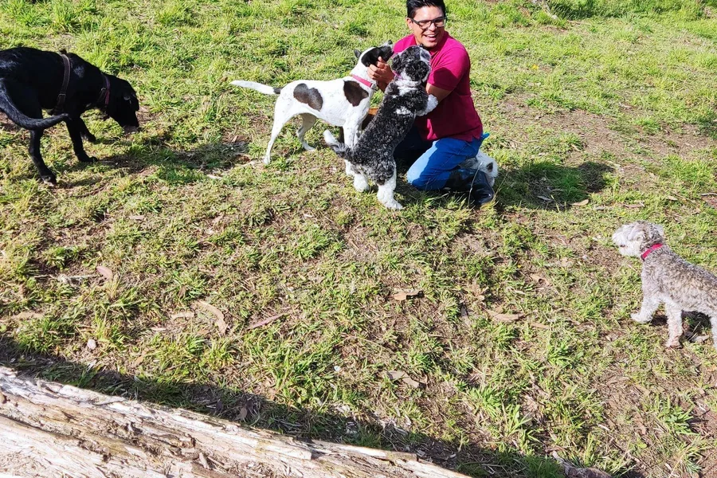
Un proceso intensivo de educación durante dos semanas, con acompañamiento y trabajo estructurado.
Quiero más información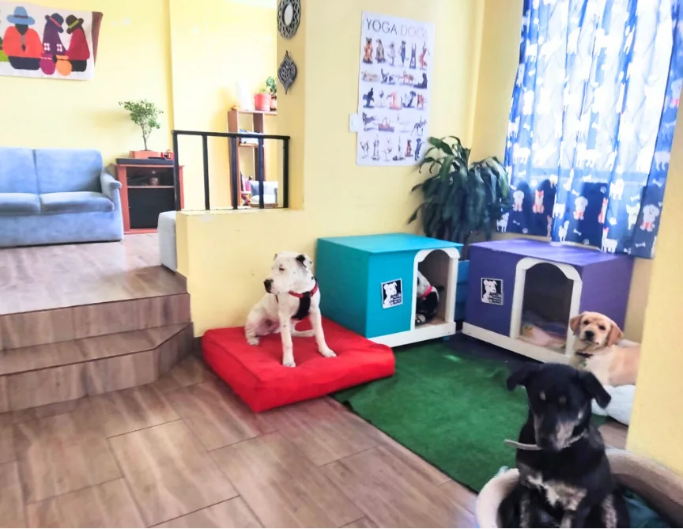
Cuidado de tu perro mientras tú trabajas, viajas o necesitas apoyo durante el día.
Necesito reservar para…
Clases grupales para trabajar educación, socialización y convivencia junto a otros perros.
¿Cuándo inicia?Nuestro objetivo no es simplemente conseguir que tu perro obedezca una orden. Queremos ayudarte a construir una comunicación clara y hábitos que funcionen en la vida cotidiana.

Hábitos diarios, perros extraordinarios.
Nos explicas qué dificultades estás teniendo con tu perro.
Observamos al perro, su entorno y la relación con su familia.
Te enseñamos qué hacer y cómo comunicarte con tu perro.
Los cambios se construyen con repetición y consistencia.
El objetivo no es que se porte bien solo durante la clase.
Opiniones reales de familias que ya trabajaron con nosotros, publicadas en Google.
Excelente, muy recomendado, hemos recibido la clase a domicilio y enseguida hemos tenido resultados positivos con todas las indicaciones prácticas y personalizadas, ya no sabíamos qué hacer y esta clase nos ha traído tranquilidad y sobre todo que como es en el domicilio recibimos las mismas instrucciones y eso nos ayuda aún montón. Así que lo super recomiendo mucho.
— Marianita Ezec
Excelente escuela. Nos ayudaron mucho con nuestra cachorrita de 3 meses, enseñándole a comportarse mejor dentro de casa. Además, lograron que pudiera convivir con otra perrita con la que, durante varias semanas, no había sido posible que estuvieran juntas. Estamos muy agradecidos por toda la ayuda recibida. La forma de enseñar es muy sencilla, práctica e interactiva, lo que hace que el aprendizaje sea fácil tanto para las mascotas como para sus dueños. ¡La recomendamos ampliamente!
— Mishell Echeverria
Saludos, hoy mi perrita tuvo su primera clase y fue increíble! Con solo unos minutos pudimos salir a caminar por mi cuadra sin tirones ni reacciones negativas, muchísimas gracias por su guía y educación, es cierto que muchas veces somos los tutores quienes cometemos errores, Marco muy bueno para enseñar, seguiremos avanzando en este proceso, pero 1 sola clase, nos cambió todo, muchísimas gracias, lo recomiendo mucho, excelente trabajo
— Ana Rocío Moreno
Nos encanta como priorizan el bienestar de nuestra mascota. Durante su hospedaje nos enviaron diariamente un video en el que podíamos ver como interactuaba con los otros perritos y vimos que todo el tiempo estuvo muy bien cuidado. Seguro seguiremos usando sus servicios y los recomendamos totalmente para dejarlos hospedados, así como en la enseñanza de hábitos algo que nos ayudó muchísimo cuando Snow llegó a casa. Marco es un excelente entrenador! Recomendadísimo!!!!!
— Azucena León
RECOMENDADOS 100%. Mi perro Robbie estuvo internado en la escuela de Buenos Hábitos por dos meses porque sufría de ansiedad por separación. Durante ese tiempo en la escuela los entrenadores le enseñaron a gestionar no solo sus niveles de ansiedad sino también sus niveles de energía, siendo hoy en día un perro más equilibrado y amoroso.
— Pedro Aponte
Desde el 2010 he trabajado con miles de familias y sus perritos. A lo largo de estos años he ayudado a comprender las necesidades de sus compañeros perrunos, a entenderlos mejor y a tener una relación basada en una comunicación más clara y beneficiosa para las dos partes.
Mi enfoque va más allá del adiestramiento tradicional, que se concentra en enseñar órdenes o trucos. Para mí, la educación canina comienza cuando las personas comprenden cómo enseñar y criar a sus perros, cómo se comunican y qué necesitan para desenvolverse adecuadamente en su entorno. El objetivo es que cada tutor o tutora adquiera herramientas prácticas para acompañar a su perro y construir hábitos que favorezcan la convivencia en el día a día. Los perros son el fruto de cómo los criamos.
Mi escuela “Buenos Hábitos Caninos” desarrolla procesos de educación canina, sea en casa directamente o en nuestros campus, para ayudar a tener al compañero ideal. Lo que enseñamos es cómo tener un mejor vínculo, basado en una comunicación clara, en cubrir las necesidades de los peques, y que esto permita una vida más plena para la familia. Mi labor se centra no solo en el perro, sino también en las personas que conviven con él, porque una relación equilibrada requiere comprensión, constancia y participación de toda la familia.
Estoy convencido de que siempre hay algo nuevo que aprender sobre el comportamiento canino, por eso mantengo la curiosidad de seguir capacitándome, pero aún más leyendo y aprendiendo del comportamiento humano y canino en cada oportunidad que tengo.
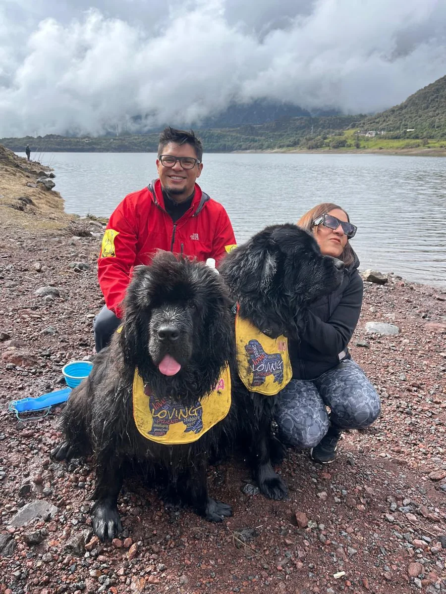
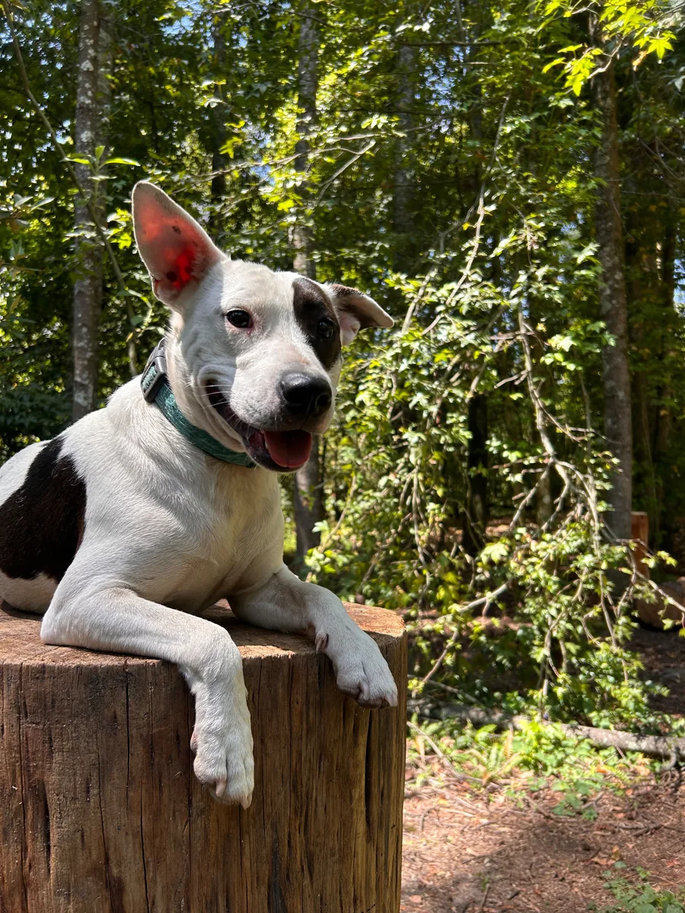
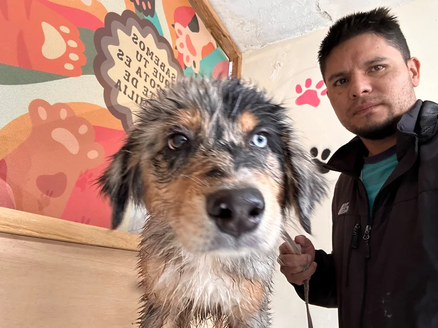
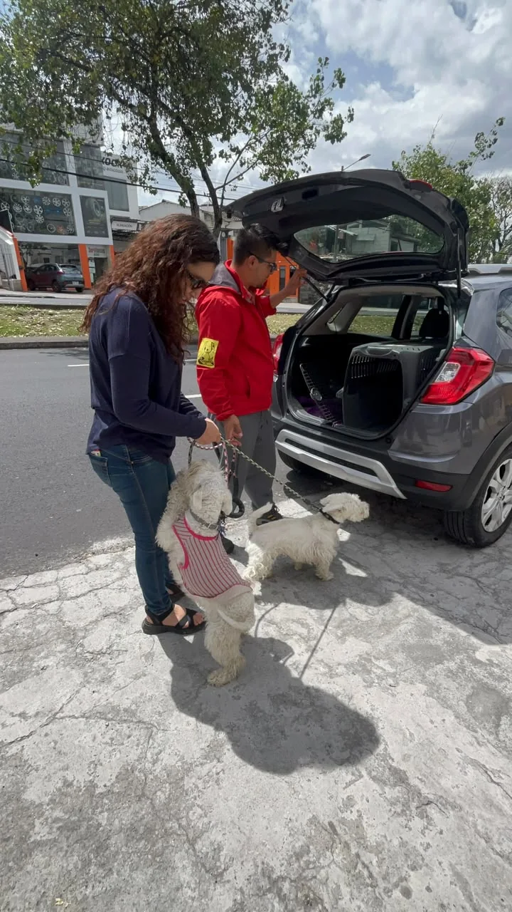
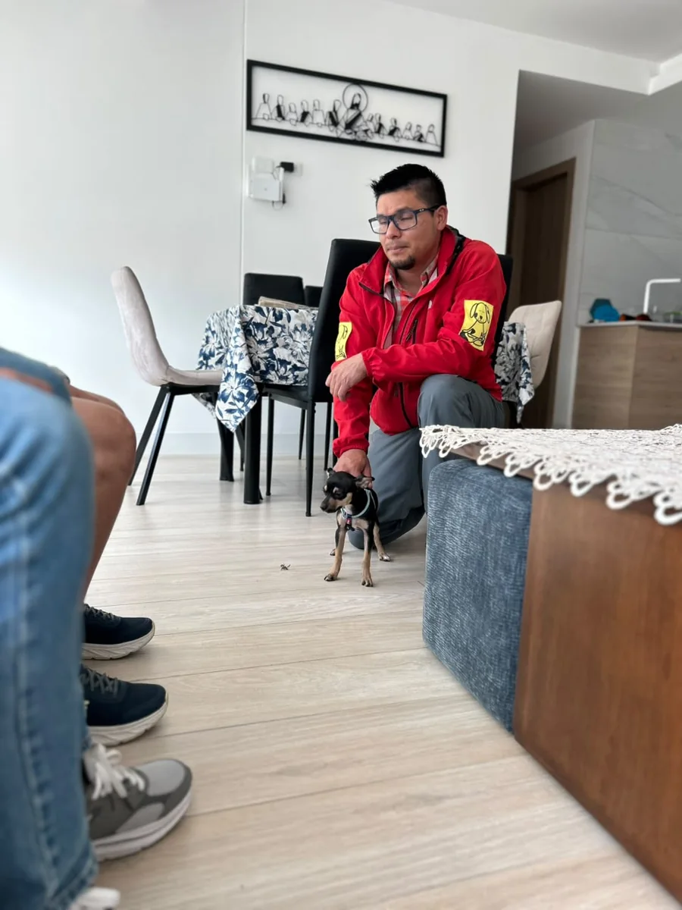
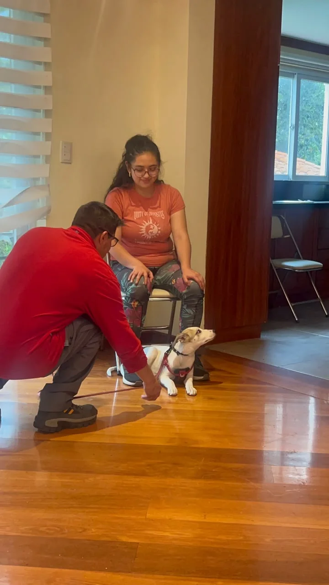
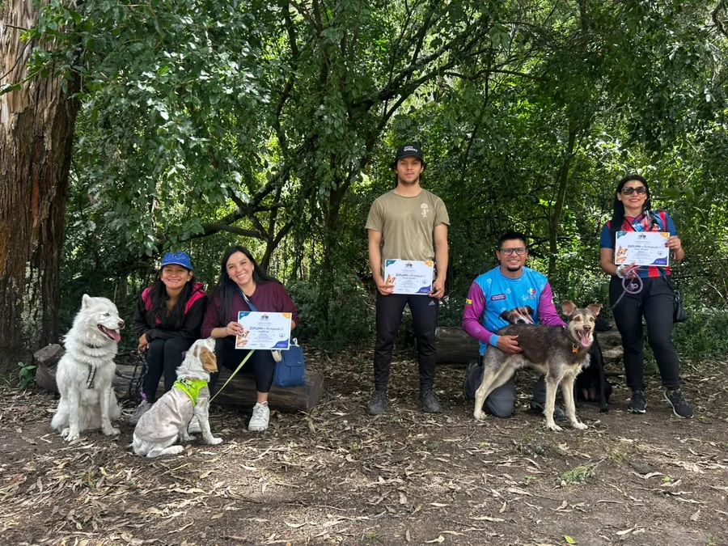
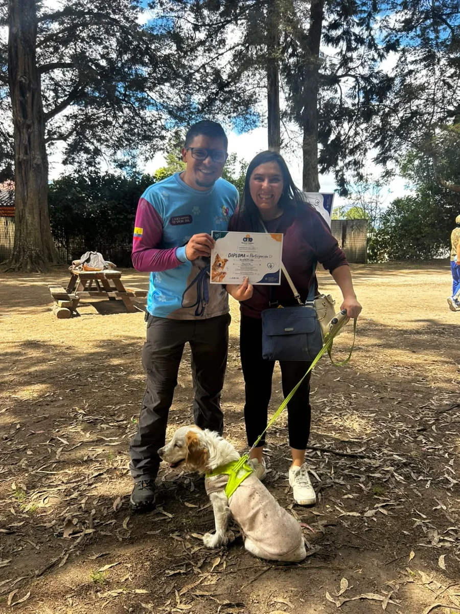
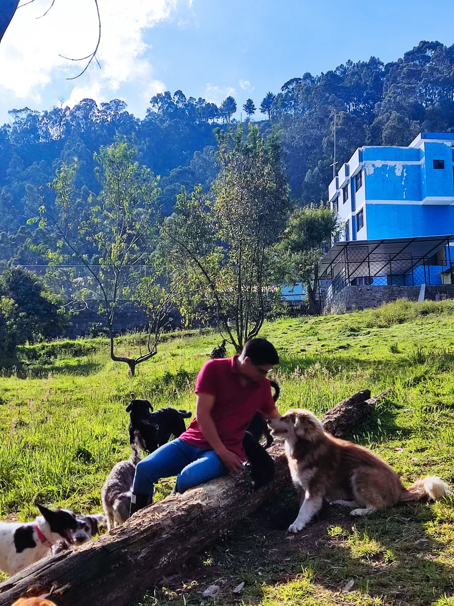
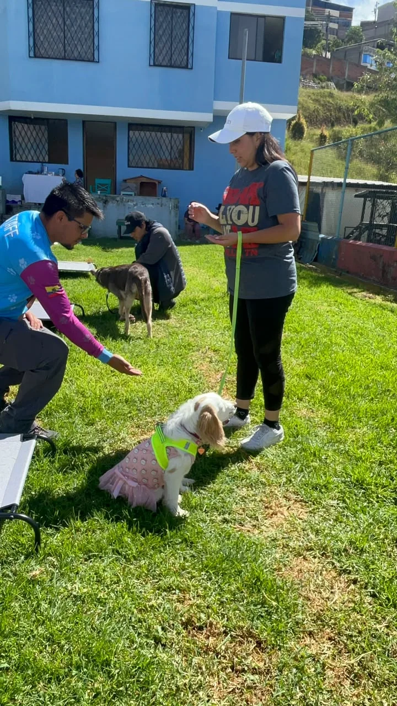
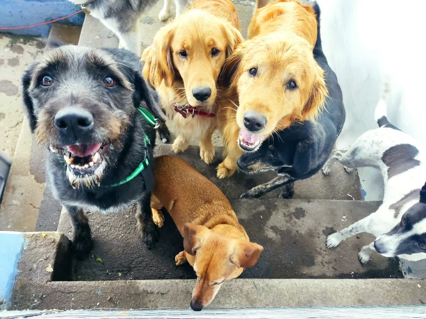
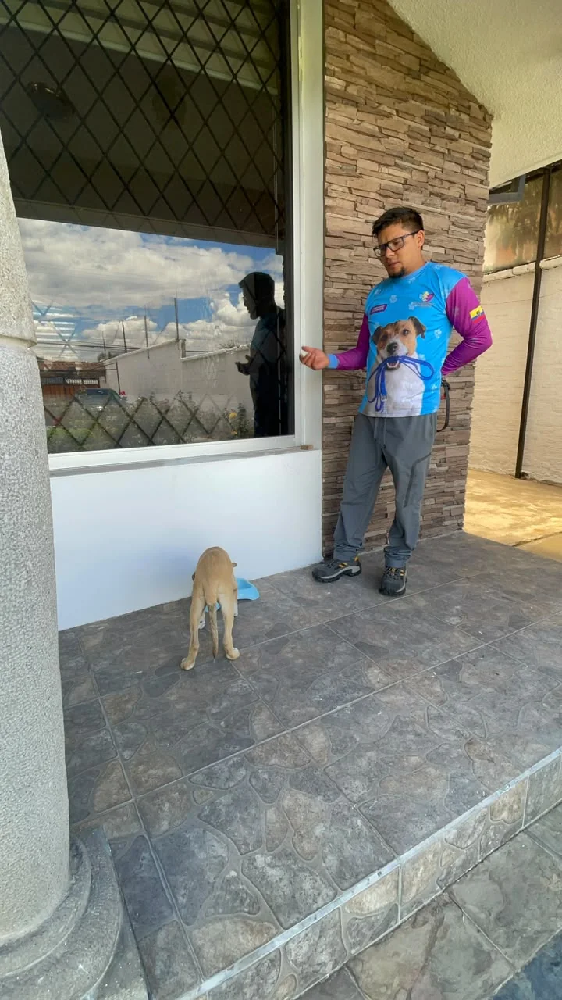
Trabajamos con perros desde los 2 meses hasta adultos. Cuéntanos la edad de tu perro y te orientamos sobre el mejor punto de partida.
Sí, nuestras clases personalizadas son a domicilio, trabajando directamente en el entorno real de tu perro.
Atendemos Quito y los Valles. Tenemos dos sedes: Conocoto y Bicentenario.
La clase dura mínimo 1 hora 30 minutos.
El costo depende del programa y las necesidades de tu perro. Escríbenos y te damos una cotización personalizada.
Podemos ayudarte con temas como:
Sí, te involucramos activamente: el objetivo es que tú aprendas a comunicarte con tu perro y que apliques los conocimientos todos los días con constancia y disciplina, porque tu perrito solo no lo va a lograr.
La clase está diseñada para que veas los cambios que quieres en la misma clase. Te dejaré ejercicios, correcciones y cambios que aplicarás en los días posteriores. Y me tendrás por WhatsApp para asesorarte en cada duda y pregunta que tengas. Podrás enviarme videos para evaluar tu avance, y si vemos necesario agendamos una nueva clase.
Sirve para acelerar procesos educativos y de socialización, mediante el cual los perros sacan toda su energía. Esto les equilibra y permite que tengan un temperamento moderado con otros perros y personas. Además aprenden ejercicios de autocontrol muy útiles en la vida cotidiana, como esperar en su cama mientras entran visitas sin interrumpir.
Dentro de la estadía educativa se trabajan los siguientes temas:
Escríbenos por WhatsApp al 0987 444 999 o completa el formulario de contacto, y coordinamos contigo la fecha y el servicio.
Clases a domicilio en Quito y los Valles. Y dos sedes para recibir a tu perro:
Hospedaje y estadía educativa
Mariano Acosta y José Cuero y Caicedo, Quito (170806)
Ver en Google Maps →Hospedaje y guardería
Jaime Chiriboga N50-107, Quito (170511)
Ver en Google Maps →Cuéntanos qué está pasando y te orientamos sobre cuál de nuestros servicios puede ayudarte.
¡Escríbenos por WhatsApp!
0987 444 999